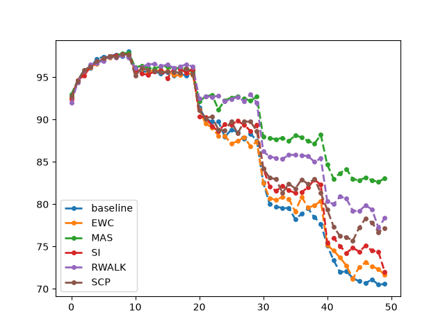

0.1 題目：同一個模型，依序學五個任務
一般的分類作業是「給一份資料，訓練一個模型」。HW14 換了一個條件：資料分成好幾個任務（task），模型一次只看得到一個任務的資料，學完一個才換下一個，而且不能回頭再看舊資料。投影片 p.6 的說法是 Model Sequentially Learn Different Task。目標是學完全部任務之後，模型在每個任務上都還要表現得好（p.5：A model can beat all task!）。
這份作業的五個任務都是辨認 0–9 的手寫數字（MNIST），差別只在圖片轉了幾度：任務 1 是原圖、任務 2 轉 20°、任務 3 轉 40°、任務 4 轉 60°、任務 5 轉 80°（投影片 p.12；第 1 章會看到實際的圖）。每個任務訓練 10 個 epoch，五個任務一共 50 個 epoch。
如果什麼都不做，直接接著訓練，模型會漸漸忘掉舊任務：在任務 5 上練好的權重，拿去認正放的數字就不準了。這個現象叫 catastrophic forgetting（災難性遺忘）。研究「怎麼依序學、又不要忘」的領域叫 lifelong learning（終身學習），也叫 continual learning（持續學習）；本書兩個詞都會出現，指的是同一件事。
範例程式已經把六種做法寫好，用同一套訓練與評估函式並排比較：
| 方法 | 一句話 | 出處 | 章 |
|---|---|---|---|
| baseline | 什麼都不做，直接依序訓練 | — | 3 |
| EWC | Elastic Weight Consolidation：用 Fisher 資訊估計每個參數對舊任務多重要，loss 裡加一項懲罰重要參數的變動 | Kirkpatrick 等，2017 | 4 |
| MAS | Memory Aware Synapses：用「輸出對參數有多敏感」當重要度，不需要 label；重要度怎麼算是作業的 TODO | Aljundi 等，2018 | 5 |
| SI | Synaptic Intelligence：訓練過程中，累加每個參數的每一步更新對 loss 下降貢獻了多少 | Zenke 等，2017 | 6 |
| RWalk | Riemannian Walk：EWC 的 Fisher 加上 SI 式的累加分數 | Chaudhry 等，2018 | 7 |
| SCP | Sliced Cramér Preservation：在輸出的分布上取很多個隨機方向，看參數對這些方向的影響 | Kolouri 等，2020 | 7 |
後五種都屬於同一類做法：在原本的分類 loss 後面加一個正則化項，把「重要的參數」拉住，不讓它離舊任務學到的值太遠。差別只在怎麼判斷一個參數重不重要。
這份作業沒有排行榜，也沒有要你把準確率往上推。評分分兩部分（投影片 p.30–32）：
- 20 題選擇題，8 分：每題 0.4 分，要選對所有正確選項才給分。基本觀念 3 題、EWC 2 題、MAS 2 題、SI 2 題、RWalk 2 題、SCP 3 題、其他方法與情境 6 題。最後這 6 題考的是範例程式沒有寫的 iCaRL、LwF、GEM、DGR，以及「三種持續學習情境」，第 8 章會補上。
- 報告，2 分：畫出每種方法的學習曲線（0.5 分，畫圖函式已提供，本章 0.6 節就會畫出來）；描述這條曲線用的指標（0.5 分，第 2 章）；貼上你寫的 MAS 重要度程式（1 分，第 5 章）。投影片特別註明：MAS 的 TODO 沒寫出來，只要學習曲線畫對，第一部分照樣給分。
因為評分不看準確率，這本書的重點不是「怎麼贏」，而是讀懂每種方法在程式裡到底算了什麼、算出來的東西大小如何、換個設定結果會不會翻盤。
0.2 模型總覽：四層全連接網路
為了公平比較，作業把模型固定住，不准改架構（notebook 的 Model Architecture 一格：To fair comparison, we fix our model architecture）。它是一個最基本的多層感知器（multilayer perceptron，MLP）：把 28×28 的圖攤平成 784 個數，經過三層「全連接 + ReLU」，最後一層輸出 10 個數，分別是 0–9 的分數（logits，還沒經過 softmax 的分數）。
model.py 的 Model。橘框是有參數的層。class Model(nn.Module):
"""
Model architecture
1*28*28 (input) → 1024 → 512 → 256 → 10
"""
def __init__(self):
super(Model, self).__init__()
self.fc1 = nn.Linear(1*28*28, 1024)
self.fc2 = nn.Linear(1024, 512)
self.fc3 = nn.Linear(512, 256)
self.fc4 = nn.Linear(256, 10)
self.relu = nn.ReLU()
def forward(self, x):
x = x.view(-1, 1*28*28)
x = self.fc1(x)
x = self.relu(x)
x = self.fc2(x)
x = self.relu(x)
x = self.fc3(x)
x = self.relu(x)
x = self.fc4(x)
return x第 18 行的 x.view(-1, 1*28*28) 把每張圖攤平：-1 的意思是「這一維讓 PyTorch 自己算」，輸入是 (128, 1, 28, 28) 時算出來是 128，所以結果是 (128, 784)。攤平之後，像素的上下左右關係對模型來說就不存在了：模型只看得到「第 i 個像素的值是多少」。這一點在第 1 章很重要，因為「把圖轉 20°」對這個模型而言，等於把 784 個輸入重新洗牌、混合，和「同一個數字」的直覺相差很遠。
一個 nn.Linear(a, b) 有一個 b×a 的權重矩陣和 b 個偏置（bias），參數量是 a·b + b。手算四層：
fc2：1024 × 512 + 512 = 524,288 + 512 = 524,800
fc3：512 × 256 + 256 = 131,072 + 256 = 131,328
fc4：256 × 10 + 10 = 2,560 + 10 = 2,570
合計：803,840 + 524,800 + 131,328 + 2,570 = 1,462,538
讓 PyTorch 自己數一次：
$ cd HW14
$ ../.venv/bin/python -c "
from model import Model
m = Model()
for n, p in m.named_parameters(): print(n, tuple(p.shape), p.numel())
print(sum(p.numel() for p in m.parameters()))"fc1.weight (1024, 784) 802816
fc1.bias (1024,) 1024
fc2.weight (512, 1024) 524288
fc2.bias (512,) 512
fc3.weight (256, 512) 131072
fc3.bias (256,) 256
fc4.weight (10, 256) 2560
fc4.bias (10,) 10
1462538和手算一致。注意權重的形狀是 (輸出, 輸入)：fc1.weight 是 (1024, 784)，不是 (784, 1024)，因為 nn.Linear 算的是 x @ W.T + b。這八個名字（fc1.weight、fc1.bias……）會一再出現：每種方法都用 model.named_parameters() 走過這八個張量，替每一個建一個同形狀的「重要度」張量，以參數名稱當 dict 的 key。
0.3 怎麼跑、跑多久
本 repo 的 HW14 是這樣跑的：
$ cd HW14
$ ../.venv/bin/python train.py第一次執行時，torchvision 會自動下載 MNIST（約 11 MB 的壓縮檔，解開後整個 data/ 是 64 MB）。下載位置是 HW14/data/MNIST/MNIST/raw/，多一層 MNIST 是因為程式把 root 設成 data/MNIST，torchvision 又在底下自己建一個 MNIST 資料夾（第 1 章）。data/ 已經加進 .gitignore。
def main():
parser = argparse.ArgumentParser()
parser.add_argument('--methods', nargs='+', default=list(METHODS), choices=list(METHODS))
parser.add_argument('--out', default='output')
opt = parser.parse_args()
same_seeds(0)
device = torch.device("cuda" if torch.cuda.is_available() else "cpu")
# prepare rotated MNIST datasets.
train_datasets = [Data('data', angle=angle_list[index]) for index in range(args.task_number)]
train_dataloaders = [DataLoader(data.dataset, batch_size=args.batch_size, shuffle=True) for data in train_datasets]
test_datasets = [Data('data', train=False, angle=angle_list[index]) for index in range(args.task_number)]
test_dataloaders = [DataLoader(data.dataset, batch_size=args.test_size, shuffle=True) for data in test_datasets]
# the notebook builds one example model here, which also draws from the random stream
example = Model()
print(example)
os.makedirs(opt.out, exist_ok=True)
results = {}
for name in opt.methods:
results[name] = METHODS[name](train_dataloaders, test_dataloaders, device)
with open(os.path.join(opt.out, 'acc.json'), 'w') as f:
json.dump(results, f, indent=1)流程很單純：設種子 0（第 240 行）；替五個角度各建一份訓練資料與測試資料；建一個 example 模型只為了印出來看（第 251–252 行，0.5 節會解釋為什麼保留它）；然後照 METHODS 的順序跑 baseline、EWC、MAS、SI、RWalk、SCP，每跑完一種就把結果寫進 output/acc.json（第 256–259 行）。六個 run_* 函式是 notebook 六格「RUN …」逐字搬過來的，第 3 章讀 baseline 的那一個，其餘五個的差別在第 4–7 章各自說明。
實測輸出（逐字。進度條用了 leave=False，跑完就從畫面上消失，所以留在終端機上的只有下面這些；每個串列有 50 個數，這裡只留開頭與結尾）：
Model( «1»
(fc1): Linear(in_features=784, out_features=1024, bias=True)
(fc2): Linear(in_features=1024, out_features=512, bias=True)
(fc3): Linear(in_features=512, out_features=256, bias=True)
(fc4): Linear(in_features=256, out_features=10, bias=True)
(relu): ReLU()
)
RUN BASELINE
[np.float64(92.58), np.float64(94.63000000000001), np.float64(95.76), …, np.float64(70.59200000000001)] «2»
==================================================================================================
RUN EWC
[np.float64(92.49000000000001), np.float64(94.63000000000001), np.float64(95.6), …, np.float64(71.66)]
==================================================================================================
RUN MAS
…（MAS、SI、RWalk、SCP 同樣格式）
RUN SLICE CRAMER PRESERVATION
[…, np.float64(77.2)]
==================================================================================================- 1
print(example)印出的模型結構。ReLU只建一次、四層共用，因為它沒有參數，共用沒有差別。 - 2每種方法印一個 50 個數的串列：第 k 個數是第 k 個 epoch 結束時的準確率（%）。它不是某一個任務的準確率，而是「目前學過的任務」各自的準確率取平均；第 2 章會把這件事拆開。
np.float64(92.58)這種寫法是 NumPy 2 的 repr；2022 年的 NumPy 1.x 印出來就是92.58，數值相同。
在本機（RTX PRO 4000 Blackwell）六種方法全部跑完是 52 分 07 秒（21:22:07 到 22:14:14，計時前後確認 GPU 上沒有別的程式）；單獨跑一種方法約 7–8 分鐘。投影片 p.10 說 Tesla T4 上每種方法約 20 分鐘、K80 約 60 分鐘。這個模型很小，GPU 大多時間在等資料：每張圖都要在 CPU 上轉成 tensor、旋轉，第 1 章會看到這段前處理。
0.4 notebook 拆成哪些檔：有兩行非改不可
官方的 HW14.ipynb 有 44 格。本 repo 把程式拆成下面這些檔（目錄頁有一張「哪一格對應哪一個檔」的對照表）：
HW14/ ├── HW14.ipynb, HW14.pdf 官方 notebook 與投影片（未改） ├── config.py Args：5 個任務、每任務 10 epoch、lr 1e-4、batch 128、test_size 8192；angle_list ├── utils.py same_seeds ├── dataset.py 旋轉、Pad、Data ├── model.py Model ├── trainer.py train、evaluate ├── methods/ │ ├── baseline.py ewc.py mas.py si.py rwalk.py scp.py ├── train.py 依 notebook 順序跑六種方法 → output/acc.json └── plot.py output/acc.json → acc_summary.png
六個方法類別（methods/*.py）是從 notebook 逐字複製的，只在檔頭加上需要的 import。唯一的內容改動是 MAS 的 TODO：原本只有一行 pass，本 repo 補上了作業要求的 global 版本（第 5 章逐行說明）。除此之外，有兩個地方不改就跑不起來。
第一行：tqdm.auto 沒有被 import
notebook 第一格只寫了 import tqdm 與 from tqdm import trange，訓練函式卻呼叫 tqdm.auto.trange。tqdm.auto 是 tqdm 套件裡的一個子模組，Python 的規則是：import tqdm 只會載入套件本身，子模組要另外 import tqdm.auto 才會掛到 tqdm 底下，除非已經有別的程式碼載入過它。把 notebook 的程式原樣存成腳本、用一般的 Python 執行：
$ ../.venv/bin/python -c "
import tqdm
from tqdm import trange
bar = tqdm.auto.trange(10)"Traceback (most recent call last):
File "<string>", line 4, in <module>
AttributeError: module 'tqdm' has no attribute 'auto'在 Colab 上這份 notebook 能跑，表示當時的環境裡有別的模組先載入了 tqdm.auto（本書沒有追查是哪一個）。這是 notebook 常見的隱性依賴：程式依賴的東西不在程式裡，換一個環境就壞。本 repo 的 trainer.py 與 train.py 都明確地寫上 import tqdm.auto：
import torch
import tqdm
import tqdm.auto第二行：lineStyle 在新版 Matplotlib 不認得
notebook 最後一格的畫圖函式寫 plt.plot(acc, marker='o', lineStyle='--', …)。Matplotlib 的參數名稱是全小寫的 linestyle（或縮寫 ls），3.11 不接受駝峰寫法的 lineStyle（2022 年的 Colab 環境接不接受，本書沒有驗證）：
$ ../.venv/bin/python -c "
import matplotlib; matplotlib.use('Agg'); import matplotlib.pyplot as plt
plt.plot([92.58, 94.63], marker='o', lineStyle='--', linewidth=2, markersize=4, label='baseline')" raise AttributeError(
AttributeError: Line2D.set() got an unexpected keyword argument 'lineStyle'麻煩的是它發生在最後：六種方法花了將近一個小時跑完，最後畫圖這一步才報錯。在 notebook 裡結果還留在變數裡，改一下重跑那一格就好；寫成腳本就全部白跑了。本 repo 因此讓 train.py 每跑完一種方法就把結果寫進 output/acc.json，畫圖另外交給 plot.py：
def draw_acc(acc_list, label_list, path='acc_summary.png'):
for acc, label in zip(acc_list, label_list):
# the notebook passes lineStyle='--', which Matplotlib 3.11 rejects (keyword is linestyle)
plt.plot(acc, marker='o', linestyle='--', linewidth=2, markersize=4, label=label)
plt.legend()
plt.savefig(path)0.5 怎麼確認拆完沒有改變結果
拆檔、補 import、改畫圖，每一步都可能不小心改變結果。這本書的每個數字都要能對回原版，所以先做一次逐位元的比對：
- 把 notebook 的程式格原樣串成一支腳本（參照版）：拿掉
!nvidia-smi那格（那是 notebook 專用的 shell 指令）和最後的畫圖格，補上import tqdm.auto，MAS 的 TODO 填入和本 repo 相同的那幾行，其餘一字不改。 - 跑參照版，記下印出的六個串列；再跑本 repo 的
train.py。 - 用
diff比對兩邊的輸出。
結果：六種方法、每種 50 個、共 300 個準確率，兩邊完全相同，diff 沒有任何輸出。本書的實驗工具 docs/tools/hw14_exp.py 不加任何選項時，也和這 300 個數逐值相等；它另外多記了「每個 epoch 結束時在五個任務上各自的準確率」，第 2 章起會一直用到。
為什麼要保留一個只用來印的 example = Model()
notebook 的 Model Architecture 那一格最後寫了 example = Model() 與 print(example)，只是為了讓學生看看模型長什麼樣子。拆檔時很自然會想刪掉它，但它會改變結果：建立一個 Model 時，四個 Linear 要用亂數初始化權重，這會從 PyTorch 的全域亂數產生器（random number generator）取走一串數；之後 baseline 建的模型拿到的就是後面那一串。實測（在 CPU 上，設同一個種子之後建模型）：
$ ../.venv/bin/python -c "
import torch
from utils import same_seeds
from model import Model
same_seeds(0); a = Model()
same_seeds(0); example = Model(); b = Model()
print(torch.equal(a.fc1.weight, b.fc1.weight), a.fc1.weight[0,:3].tolist(), b.fc1.weight[0,:3].tolist())"False [-0.00026738643646240234, 0.019158700481057167, -0.029394470155239105] [-0.032978203147649765, -0.03205079957842827, -0.01618199422955513]有沒有先建 example，baseline 的初始權重就不同，之後的訓練與印出的數字都不可能逐位元相同（完整重跑本書沒有做，見本章自我測驗第 3 題）。所以 train.py 第 251 行保留了它，並加註解說明。同樣的道理，六種方法共用同一條亂數流：EWC 的初始權重取決於 baseline 用掉了多少亂數。這代表「只跑 EWC」和「照順序跑到 EWC」得到的數字不同，train.py 檔頭的註解提醒了這一點。第 8 章的多種子實驗就是每種方法各自獨立跑。
0.6 第一張成績表與報告的學習曲線
把參照版的結果交給 plot.py，就是報告第一部分要交的學習曲線：
$ ../.venv/bin/python plot.py output/acc.json
plot.py 的實際輸出（Matplotlib 預設配色，和本書其他圖的方法色不同）。橫軸是第幾個 epoch（0–49），縱軸是「已學任務的平均準確率」（%）。這張圖有一個明顯的形狀：每 10 個 epoch 往下跳一階。第 10、20、30、40 個 epoch 是換任務的時間點，平均準確率在那裡突然下降，然後在同一個任務的 10 個 epoch 裡大致持平。直覺的解讀是「換任務就開始遺忘」。但要小心，換任務的那一刻，分母也變了：本來是「任務 1、2 的平均」，現在變成「任務 1、2、3 的平均」，新加進來的任務也會影響這個平均。所以那一階的落差不能直接當成遺忘的量。第 2 章會把這條曲線拆成五條，各看一個任務，並算出每一階裡遺忘佔了多少（答案是：幾乎全部，而且真正的遺忘比看到的落差還大）。
每種方法在五個任務學完時（第 10、20、30、40、50 個 epoch）的值：
| 方法 | λ | 任務 1 學完 | 任務 2 | 任務 3 | 任務 4 | 任務 5（最後） |
|---|---|---|---|---|---|---|
| baseline | 0 | 98.03 | 95.58 | 87.51 | 77.70 | 70.59 |
| EWC | 100 | 97.77 | 95.31 | 87.38 | 80.40 | 71.66 |
| MAS | 0.1 | 97.89 | 95.74 | 92.70 | 88.20 | 83.06 |
| SI | 1 | 97.69 | 95.95 | 89.34 | 82.30 | 71.98 |
| RWalk | 100 | 97.32 | 96.25 | 91.98 | 85.42 | 78.37 |
| SCP | 100 | 97.64 | 95.32 | 88.64 | 81.31 | 77.20 |
三個觀察，後面各章會一一追下去：
- 學完任務 1 時，六種方法幾乎一樣（97.3–98.0）。這很合理：學第一個任務時還沒有「舊任務」，五種正則化方法的懲罰項都是 0，和 baseline 做的事一樣。差別只來自亂數：六種方法共用一條亂數流，各自的初始權重不同（0.5 節）。
- MAS 最後最高（83.06），EWC 與 SI 和 baseline 差不到 1.5 個百分點。一個「幾乎沒有效果」的方法，可能是方法本身不行，也可能是 λ 太小。第 4 章會看到 EWC 算出來的重要度加起來只有 0.44，MAS 的是 44 萬，差了六個數量級，而兩者的 λ 只差一千倍（100 對 0.1）。
- 這張表只有一個種子。RWalk 的 78.37 和 SCP 的 77.20 差 1.2 個百分點，換一個種子順序會不會翻過來？第 3 章先量 baseline 自己在不同種子之間差多少，第 8 章用五個種子重新比一次。
現在的做法：把「跑得起來」寫成程式，而不是寫在環境裡
這一章碰到的兩個問題（隱性的 tqdm.auto、改了名的參數）和兩個預防措施（逐位元比對、每跑完一段就存檔），在 2026 年的專案裡通常用工具處理：用 uv 或 pip-tools 把套件版本鎖在 lock file 裡，換一台機器也裝到同一組版本；notebook 交出去之前用「Restart and run all」從乾淨的 kernel 重跑一遍，把隱性依賴抓出來；長時間的實驗把每個階段的結果寫到檔案或實驗追蹤工具（如 MLflow、Weights & Biases），而不是只留在 notebook 的變數裡。本 repo 的做法是共用一個鎖定版本的 .venv，加上每本書的「先驗證逐位元一致，再做實驗」。
本章重點
- HW14：同一個模型依序學五個任務（MNIST 轉 0°、20°、40°、60°、80°），每任務 10 個 epoch，學新任務時看不到舊資料。範例程式並排比較 baseline 與 EWC、MAS、SI、RWalk、SCP 五種「加正則化項拉住重要參數」的方法。沒有排行榜：20 題選擇題 8 分，報告 2 分（學習曲線、描述指標、MAS 的 TODO）。
- 模型固定為 784 → 1024 → 512 → 256 → 10 的四層全連接網路，1,462,538 個參數，手算與 PyTorch 一致；每種方法都替這八個參數張量各建一個同形狀的重要度張量。
python train.py依序跑六種方法，本機 52 分 07 秒；每種方法印 50 個數，是每個 epoch 結束時「已學任務的平均準確率」。- notebook 原樣用一般的 Python 跑不起來：缺
import tqdm.auto、lineStyle在 Matplotlib 3.11 報錯。本 repo 補上 import、把畫圖拆到plot.py，並和參照版逐位元比對：300 個數完全相同。只為了印出來的example = Model()會用掉亂數，所以保留。 - 一個種子的結果：MAS 83.06 最高，RWalk 78.37、SCP 77.20，SI 71.98、EWC 71.66 與 baseline 70.59 幾乎一樣。λ 與重要度的量級對不上、只有一個種子，這兩件事要先解決，才能說誰比較好。
自我測驗
1. fc2.weight 的形狀是多少？為什麼不是 (1024, 512)？
(512, 1024)。nn.Linear(in, out) 的權重形狀是 (out, in)，計算方式是 x @ W.T + b：輸入 (128, 1024) 乘上 W.T 的 (1024, 512)，得到 (128, 512)。
2. 學完任務 1 時，EWC 的準確率（97.77）和 baseline（98.03）不同。是 EWC 的正則化項造成的嗎？
不是。學第一個任務時還沒有舊任務，EWC 的重要度全是 0，懲罰項也是 0，做的事和 baseline 一樣。差別來自初始權重：六種方法共用一條亂數流，EWC 的模型是在 baseline 跑完之後才建立的，拿到的亂數不同。第 4 章讀 EWC 的程式時會確認「重要度全是 0」這件事。
3. 如果把 train.py 第 251–252 行（example = Model() 和 print(example)）刪掉，再跑一次，印出的 300 個數會一樣嗎？
不會。建立 Model 會從全域亂數產生器取亂數來初始化權重；少建一個，之後每個模型的初始權重都跟著改變。本章 0.5 節實測過：同一個種子下，「直接建模型」和「先建 example 再建模型」的 fc1.weight 不同（torch.equal 是 False）。完整重跑六種方法的結果本書沒有跑，但初始權重已經不同，結果不可能逐位元相同。
4. 學習曲線在第 10、20、30、40 個 epoch 往下跳。這個落差全部都是「遺忘」嗎？
不能直接這樣看。曲線上的值是「目前學過的任務」的平均，換到新任務時分母多了一個任務，新任務的準確率也會影響平均。要分開看，必須記錄每個任務各自的準確率，這是第 2 章的主題。第 2 章 2.4 節拆開之後的答案是：新任務只要一個 epoch 就到 97% 左右，從任務 3 起反而把平均往上拉，所以那一階的落差幾乎全是遺忘，真正的遺忘量還比看到的落差大（換到任務 4 時，落差 4.96，遺忘 7.37）。
5. 用 python train.py --methods EWC 只跑 EWC，結果會和完整跑六種時印出的 EWC 串列相同嗎？
不會相同。完整跑的時候，EWC 是在 baseline 用掉一大段亂數（建模型、每個 epoch 洗牌）之後才開始的；只跑 EWC 時，它直接接在 example 之後。初始權重與資料順序都不同。train.py 檔頭的註解就是在提醒這件事。
延伸閱讀
- 李宏毅，Life Long Learning（課程影片，notebook 開頭引用的那一講）。
- Gido M. van de Ven、Andreas S. Tolias，Three scenarios for continual learning（2019）：選擇題考的「三種情境」，第 8 章會用到。
- Matthias De Lange 等，A continual learning survey: Defying forgetting in classification tasks（2019）：把方法分成 replay、regularization、parameter isolation 三大類的綜述，notebook 開頭那張分類圖用的就是這套分法。
- Rahaf Aljundi，Continual Learning in Neural Networks（2019，博士論文）：notebook 在 EWC 一節引用的參考資料，2.4 節推導了 EWC。